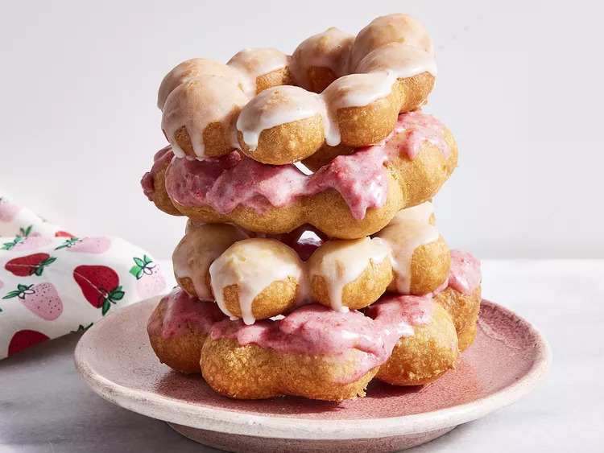

A mochi donuts recipe

source: Laura Kanya
Description
These homemade mochi donuts are crispy on the exterior with a light, fluffy interior, which maintains that mochi chew. They are not too sweet, which is how we like our donuts.
Ingredients
- 1 1/2 cups Mochiko (sweet white rice flour, such as Asian’s Best), plus more for dusting
- 1 cup tapioca flour
- 1/2 cup granulated sugar
- 1 tablespoon baking powder
- 1/4 teaspoon kosher salt
- 2/3 cup whole milk
- 3 tablespoons unsalted butter, melted
- 1 teaspoon vanilla extract
- 1 large egg
- canola oil for frying
- 1 1/4 cups powdered sugar
- 2 tablespoons whole milk, or more as needed
- 1/2 teaspoon vanilla extract
- 1 tablespoon ground freeze dried fruit such as strawberry, mango or dragon fruit
Steps
- Combine rice flour, tapioca flour, sugar, baking powder, and salt in the bowl of a stand mixer fitted with the paddle attachment. Beat on low speed until combined, 1 minute. Add milk, butter, vanilla, and egg; beat on low speed until a smooth dough forms about 1 to 2 minutes (dough will be slightly sticky).
- Lightly dust rice flour onto a clean work surface and turn dough onto surface. Divide dough into quarters and working in batches, roll dough quarters into 18-inch-long ropes about 1-inch wide. Cut each rope into 1-inch pieces. Roll each piece into a ball, wetting hands as needed to help roll (about 72 each for 9 donuts).
- Cut 9 square pieces of parchment paper, 5x5-inches, and place in a single layer on a baking sheet. Arrange 8 dough balls onto each piece parchment in a ring about 3 1/2 inches in diameter, connecting them side by side and using water to seal together.
- Pour oil to a depth of 2 inches in a large Dutch oven; heat over medium-high to 350 degrees F (175 degrees C).
- Place 3 dough rings, along with parchment, in hot oil. Remove parchment with tongs once dough floats to top of oil. Cook until golden and puffed, turning once halfway through, 2 to 3 minutes. Transfer to a wire rack lined with paper towels; cool 10 minutes. Repeat with remaining dough rings.
- For the glaze whisk powdered sugar, 2 tablespoons milk, and vanilla together in a medium bowl. Mixture should be the consistency of heavy cream; add up to 1 tablespoon milk, 1 teaspoon at a time, as needed to adjust consistency. Dip tops of 4 or 5 doughnuts into the glaze; place on wire rack (with paper towel removed).
- Stir 2 teaspoons dried fruit powder into remaining glaze. Dip remaining doughnuts in the glaze; transfer to wire rack and sprinkle with remaining fruit powder.